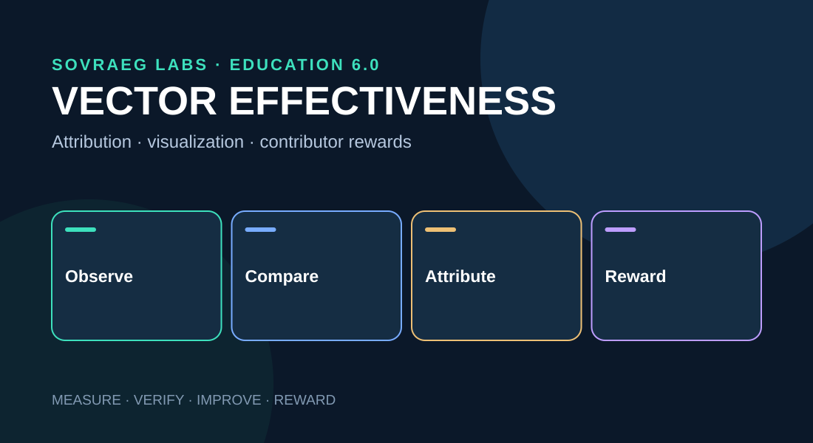

Vector Effectiveness & Rewards
A deployable, self-contained chapter in the SOVRAEG Learning Velocity research series, with interactive demonstrations and local media assets.
Research proposal · v0.1
Original user prompt
Name the layers precisely
The umbrella should be a SOVRAEG Learning Velocity Framework (SLVF). Its subordinate artifacts play distinct roles.
| Layer | Designation | Purpose |
|---|---|---|
| SLVM | Measurement Model | Quantify durable gain and mastery |
| SLVS | Measurement Standards | Definitions, scales and reporting rules |
| SLVP | Evidence Protocol | Interchange of events and attestations |
| SLVE | Evaluation Methodology | Estimate causal contributions |
| SLVO | Observatory | Visualize trajectories and interventions |
| SLCR | Contribution & Rewards | Govern compensation and recognition |
These are proposed SOVRAEG specifications, not recognized external standards.
Defining vector effectiveness
Learning Vector Effectiveness (LVE) is a context-specific estimate of the incremental durable learning improvement caused by an intervention compared with an appropriate alternative. It is not inferred merely because a learner interacted with a resource.
A vector profile should contain its version and contributor, intended competency, relevant learners and context, exposure/fidelity, proficiency gain, retention, transfer, time to mastery, costs, uncertainty, and evidence tier.
Interactions matter: for interventions A and B, synergy can be estimated as G_AB − G_A − G_B + G_0 when outcomes come from comparable experimental conditions.
Comparative effectiveness chart
The following numbers are wholly hypothetical incremental proficiency-point effects. A deployed chart should include confidence intervals, sample sizes, study type and the exact comparison condition.
Comparisons belong within meaningful competency and assessment reference classes; mathematics tutoring and kata coaching cannot be ranked on a universal gain scale.
Contributors and evidence
| Contributor | Primary evidence |
|---|---|
| SYNCZ designer | Durable improvement due to component version |
| SYNCZINE architect | Effect of sequencing and pathway orchestration |
| SYNCTESS designer | Assessment validity and evidence quality |
| SOVRAEGE educator / coach | Incremental mastery and transfer support |
| SOVRAEGE mentor | Autonomy, persistence and long-term growth |
| SOVRAEGENT operator | Incremental AI support, independence and cost |
| Peer contributor | Verifiable feedback and peer support |
Use distinct contribution categories: Learning Impact, Evidence Impact, and Stewardship Impact. Do not misclassify assessment-quality improvement as faster learning.
Interactive impact reward allocation
Proposed reward expression: Reward = creation royalties + service compensation + validated impact incentives + stewardship rewards. Only the impact portion needs causal attribution. The sliders below simulate an illustrative distribution—not estimates of real contribution.
A real reward rule requires contractual entitlements, evidence thresholds, auditing, appeals, and safeguards against gaming.
Attribution, equity, and agent safeguards
Separate verified participation, evidence-associated contribution, and causally supported contribution. Optional Shapley-style allocation can distribute an approved pool, but is not itself proof of causal learning impact.
Do not reward SOVRAEGENTS for message count, engagement time or dependency. Prefer durable capability, independent performance, useful intervention precision, privacy, operational efficiency and accessibility. The agent's economic beneficiary should be contractually identified (developer, operator, organization, or commons).
Introduce versioned Learning Vector Contribution Records (LVCR), a Learning Effectiveness Registry, and an auditable Learning Contribution Ledger. Privacy-preserving records should not expose individual learner histories to reward recipients.